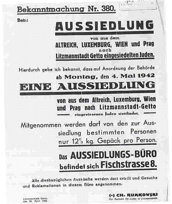
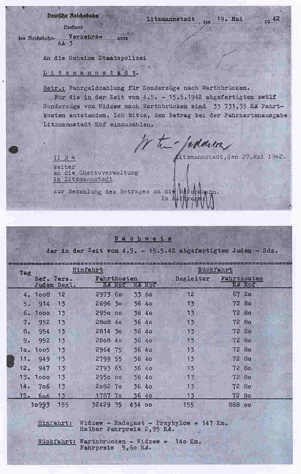
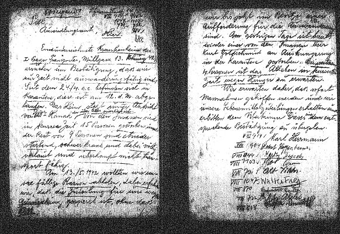
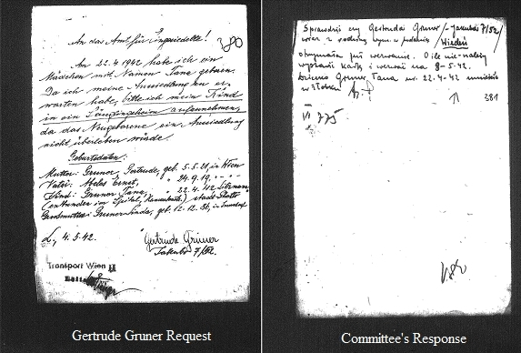
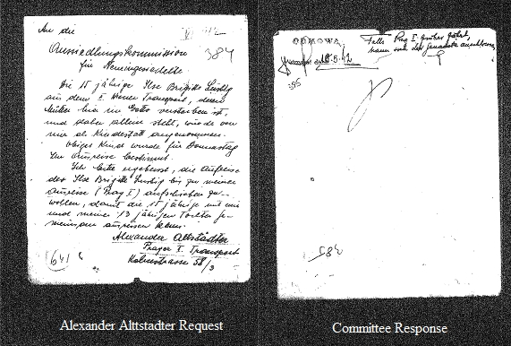

|
· Background · Sample Letters · Sources · Database · Acknowledgements · Searching the Database |
This database is an index of 4,022 persons named in 2,400 pages of letters written by residents of the the Łódź Ghetto in May 1942. These letters, addressed to the Ghetto administration's "Office of Resettlement", were requests for exemption from "resettlement". The letters are by persons who were deported to Łódź from Germany, Austria, and Czechoslovakia in Oct-Nov 1941.
In October/November of 1941, 19,953 Jews were deported to the Łódź Ghetto from Berlin (4 transports), Cologne (2), Frankfurt/Main (1), Hamburg (1), Luxemburg (1), Prague (5) and Vienna (5). The following table details the transports:
| Transport | Departure Date |
Special Train # |
Arrival date in Łódź |
Arrival Number in Łódź |
# of Deportees |
|---|---|---|---|---|---|
| Berlin I | 18-Oct-1941 | Da4 | 19-Oct-1941 | 1,013 | |
| Berlin II | 24-Oct-1941 | 25-Oct-1941 | 10th transport | 1,146 | |
| Berlin III | 27/29-Oct-1941 | 30-Oct-1941 | 15th transport | 1,009 | |
| Berlin IV | 01-Nov-1941 | 02-Nov-1941 | 18th transport | 1,979 | |
| Düsseldorf | 27-Oct-1941 | 28-Oct-1941 | 1,011? | ||
| Frankfurt/M. | 20-Oct-1941 | Da6 | 21-Oct-1941 | 6th transport | 1,180? |
| Hamburg | 25-Oct-1941 | 26-Oct-1941 | 1,034 | ||
| Köln I | 22-Oct-1941 | 22-Oct-1941 | 1,018 | ||
| Köln II | 30-Oct-1941 | 31-Oct-1941 | 1,011 | ||
| Luxemburg / Trier | 16-Oct-1941 | Da3 | 18-Oct-1941 | 560? | |
| Prag I (A) | 16-Oct-1941 | Da2 | 17-Oct-1941 | 1,000 | |
| Prag II (B) | 21-Oct-1941 | Da7 | 22-Oct-1941 | 7th transport | 1,002 |
| Prag III (C) | 26-Oct-1941 | 27-Oct-1941 | 12th transport | 1,000 | |
| Prag IV (D) | 31-Oct-1941 | 01-Nov-1941 | 17th transport | 1,000 | |
| Prag V (E) | 03-Nov-1941 | 04-Nov-1941 | 20th transport | 1,000 | |
| Wien I | 15-Oct-1941 | Da1 | 16-Oct-1941 | 1,005 | |
| Wien II | 19-Oct-1941 | Da5 | 20-Oct-1941 | 5th transport | 1,003 |
| Wien III | 23-Oct-1941 | Da9 | 23-Oct-1941 | 9th transport | 1,000 |
| Wien IV | 28-Oct-1941 | 29-Oct-1941 | 14th transport | 999 | |
| Wien V | 02-Nov-1941 | 03-Nov-1941 | 19th transport | 998 | |
| TOTAL | 20,964 |
(Most of the data based on Gottwaldt/Schulle, 2005).
The German police report of November 11, 1941 has slightly lower numbers for the Düsseldorf (984) and Luxemburg (512) transports, with the total 19,837. The numbers in Andrea Löw's table (p. 265) and Dobroszycki (p. lvii) add up to a total of 19,953, with a few question marks.

In Ghetto Announcement Number 380 (see at right), the deportees were told on April 29, 1942 that they would be "resettled", but could apply for an exemption. The 10,915 "resettled" residents, more than half of the original number of about 20,000 deportees, could not have known that all the members of the 12 transports in May would be taken to Chełmno and murdered upon arrival. According to The Chronicle of the Łódź Ghetto 1941-1944, on May 17, 1942, 15,000 eviction warrants had been issued, and 4,500 of them were rescinded after applications for exemption.
More than 2,400 pages of these application letters were found, having been conserved and microfilmed. They constitute the very last trace of these people. The eviction warrants were sent out in 13 batches with the names taken from the transport lists. According to a note in the Łódź Chronicle of May 6 (1942), the sequence was supposed to be as follows:
Berlin II, Wien II, Düsseldorf, Berlin IV, Hamburg, Wien IV, Prag I, Prag III, Köln II, Berlin III, Prag V, Berlin IV, Wien II occurring a second time here), Wien V, Prag II, Prag IV, Wien I, Frankfurt, Köln I, Luxemburg.
This corresponds to some degree (but in some cases not at all) with the data compiled from the letters:
| Batch No. | Transport Distribution |
|---|---|
| I | Large share of Berlin II, Berlin III, Köln II and Wien I, small part of Köln I |
| II | |
| III | Most of Hamburg, large share of Prag V, small share of Düsseldorf |
| IV | Large share of Köln I and Wien I, part of Düsseldorf |
| V | Large share of Berlin I and Köln I, part of Düsseldorf |
| VI | Large share of Berlin IV, Wien II and Wien IV |
| VII | |
| VIII | Large share of Prag I and Prag II, Luxemburg and Wien V |
| IX | Large share of Prag III, remaining parts of Prag I, Prag II and Hamburg |
| X | Large share of Prag IV and Frankfurt, remaining parts of Köln II, Luxemburg, Wien II, III and V |
| XI | |
| XII | Remaining parts of all Prag transports |
| XIII |

(From Engwert/Kill, 2009: page 95)
The two documents constitute the charges the Deutsche Reichsbahn sent to the Litzmannstadt Gestapo under the heading "Fahrgeldzahlung für Sonderzüge nach Warthbrücken" (Ticket price for special trains to Warthbrücken). The Łódź train went to Warthbrücken station on the main line, where a small gauge railway took the deportees to the Chełmno extermination camp (Vernichtungslager Kulmhof, near Chełmno nad Nerem = Kulmhof an der Nehr, 31 miles NW of Łódź). The ticket price follows the guidelines described by the Head of the Reichsbahn and Minister of Transport in his letter on July 26, 1941 that each passenger in these "Sonderzüge" (special trains) has to pay half of the fare of a third class ticket, if there are more than 400 passengers. On the way back, the accompanying guards of 12 or 13 men had to pay full price because the number of passengers was not sufficient for a special train status.
The Gestapo passed on the bill for the total amount of RM 33,731. 35 to the German Ghetto Administration, who was to pay in the money at the Litzmannstadt station ticket office. The Administration paid the amount out of the income from the Ghetto’s enterprises. Thus, the Ghetto population’s production income was used to pay the costs for their transport of their own fellow inmates to the murder site Chełmno.
Most of the letters from reels 299 and 300 were rejected and stamped ODMOWA (Polish for “rejection”), a very few applications were “acknowledged” (uwzglednione in Polish) or assigned to the category “over-quota” (nadkontyngent in Polish). There are also a few cases where people who were rejected managed to stay on and survived. Those who did not get any exemption or did not even try would be taken on one of the 12 transports:
| Transport No. | Date | Number of Deportees* |
Reported in Chronicle** |
|---|---|---|---|
| 1 | Mon, May 4 | 1,006 | |
| 2 | Tue, May 5 | 914 | |
| 3 | Wed, May 6 | 1,000 | |
| 4 | Thu, May 7 | 952 | included members of Düsseldorf and Hamburg Transports (Chronicle) |
| 5 | Fri, May 8 | 954 | |
| 6 | Sat, May 9 | 952 | included 260 "Non-Aryan Christians" (Chronicle) |
| 7 | Sun, May 10 | 1,005 | |
| 8 | Mon, May 11 | 949 | |
| 9 | Tue, May 12 | 947 | |
| 10 | Wed, May 13 | 1,000 | |
| 11 | Thu, May 14 | 706 | 706 people |
| 12 | Fri, May 15 | 606 | 600 people |
| 10,993 | TOTAL 10,915 | ||
* Numbers in this column taken from the bill issued by the Deutsche
Reichsbahn, ticket office Litzmannstadt on May 19, 1942 to the Gestapo,
see above.
** Data in this column taken from The Chronicle of the
Łódź Ghetto 1941-1944.
The information within the letters provide key genealogical data, including death of family members, relatives in other concentration camps or in other countries (even the U.S.), the names of people who lived together in the same flat and their family relationship, their failing state of health, the type of forced labor in the camp etc. If applicable, the prisoners also describe at great length the World War I experiences and the awards they were given in the Austrian or German Army in the hope that this would exempt them from re-deportation, which actually was the case for some military decorations. There is no other material that would allow this kind of detailed family history.
In some cases, these names are neither listed in the Łódź Names Register nor at Yad Vashem. Thus, these letters are the only places to report a definite date of death for family members. Also, in some cases, new families were founded by weddings in the ghetto, as long as life in the ghetto lasted.
With the completion of the indexing of these letters and its uploading into JewishGen's Holocaust Database, family members and researchers will be able to gain access to the last traces of these Łódź Ghetto residents. The project only became possible through the efforts of Peter Landé from the United States Holocaust Memorial Museum (USHMM), who found this source and provided access to it. It will help to make sure that the names of these victims and their last thoughts will be remembered.
Below are three sample letters with their translations. The letter writers concentrated on reasons why they believed they should receive a deportation exemption. The writers knew that expressing fear would not help them, so they were concentrating on listing the arguments that would help them, i.e. health problems that made them totally unable to be transported, war medals, official work place, sometimes also merits in helping the Jewish/Zionist cause in the original place they came from or descriptions of skills that could help in work.
Many of the letters showed that the writers were requesting different arrangements, rather than permanent deportation exemptions. The letter writers could not imagine what was to be done to them once they were on their way to Chełmno and they didn’t realize until the very last minute. Even after the arrival in Chełmno, they were told that they were going to be sent to work after first having a shower when they were pushed into the truck.
This is a sample letter which differs from most others, in so far that it is not signed by a family but by nine patients of an infirmary who have seen 15 out of 24 patients die before their eyes.
This example also shows the difficulties of interpreting the data: The entry "departure 12-May-1942" in the residential files confirms what is said in the letter: the patients' names were on the Eviction List for May 12, 1942. But – as they say in their letter – they may never have received the Eviction letter since it may have been delivered to their home addresses and not to the quarantine infirmary. However, the office for distributing the food ration coupons would have seen the eviction date and stopped the food ration when it was attempted to collect it for the nine patients still alive on May 13. Only for Walter Frey it is explicitly stated that he was put on the last transport 12 with transport number 431 on May 15, 1942 to the Chełmno gas trucks. The death date for Kurt Goldschmied on 13-May-1942 is confirmed in the records.
Other data for the other names are inserted after their names, none of them seems to have survived; this letter may be the last trace of them.

Urgent!
Addressed to the Office for Resettlement, here
The signers of this letter in the infirmary from the First Prague Transport, Muehlgasse 13, Apartment 42, ask for confirmation that at this point in time we are not able to be resettled. Since April 24th we have been under quarantine which elapsed on the 12th of this month (May). The infirmary is under the supervision of Dr. Hanak, who is informed about everything.
Of the patients, 15 persons have died within a short period and the remaining 9 persons are dying, sick, and also very lice-infested and not at all able to be transported.
On May 13th, 1942 we wanted to collect our usual food ration and were told that our rations were blocked due to our resettlement, even though we are not in possession of an eviction warrant. Yesterday, another patient, Mr. Kurt Goldschmied died in quarantine. Four other persons are expected to die of starvation within a short time.
We expect, therefore, that measures will be undertaken immediately and we will be given our food rations and we ask that the messenger will be given such a confirmation.
VIII/914 Karl Herrmann (Died in the ghetto on 11-Jul-1942) VIII/904 Robert Heppenheimer (Ausg. 12-May-1942) VIII/944 Karoly, Desider (Ausg. 12-May-1942) VIII/1103 ? VIII/731 Alt, Viktor (Ausg. 12-May-1942) VIII/1047 Walter Frey (Ausg. 12-May-1942; Transport 12 to Chełmno, transport no. 431 = last transport on 15-May-1942) VIII/870 Gutmann, Emilie (Ausg. 12-May-1942) VIII/722 Viktor Abeles (Placed in Old-Age-Home, Ausg. 02-Jun-1942) VIII/818 Rosa Deutsch (Moved to another flat on 28-Jun-1942)
This letter shows a request from a mother who had borne a child in the ghetto about a month before this request. She agreed to be deported provided her baby was given a place in the ghetto nursery. When this done she went on the transport, she was murdered, and the baby survived her by a few weeks.

Gertrude GRUNER says.
"To the office of the Newly settled,
On 22nd of April 1942 I gave birth to a girl with the name Tana. Since I have to expect an Eviction order, I ask you to provide a place in a nursery, since the newly born would not survive a redeportation.
Gertrude Gruner
Transport Vienna II"The Committe's answer in Polish on the next image says that Gertrude should be put on the transport on May 8. "The child Gruner Tana has had a place in the nursery since April 22."
Gertrude Gruner was originally on the Eviction List for May 4, but may have been put on the transport for May 8. Tana Gruner died in the nursery on May 22nd. She survived her mother by about two weeks.
This letter shows an example, how people helped each other even during these dire circumstances. A 15-year old girl from Vienna had lost her mother and was then adopted by a father from Prag who already had a 13-year old daughter.

"To the Resettlement Office,
The 15-year-old Ilse Brigitte Lustig from the 2nd Vienna Transport, whose mother died in the ghetto and who is all alone, has been adopted as a child by me. This child has been sent an Eviction order for Thursday.
I ask you deferentially to delay the departure of Ilse Brigitte Lustig until my departure with the 1st Prague Transport, so that the 15-year old can travel together with my 13-year old daughter.
Alexander Altstädter
1st Prague transportThe answer from the Committee on the next page says:
"Rejection. If the 1st transport Prague leaves earlier, the applicant can join the transport."
"The reasoning is, whatever transport leaves earlier, all of them can leave earlier together."
Corbach, Dieter: Departure: 6.00 a.m. Messe Köln-Deutz, Deportations 1938-1945. Köln: Scriba Verlag, 1999.
Diamant, Adolf: Getto Litzmannstadt: Bilanz eines nationalsozialistischen Verbrechens. Frankfurt/Main, 1986.
Dobroszycki, Lucjan (ed.): The Chronicle of the Łódź Ghetto 1941-1944. New Haven: Yale University Press, 1984.
Engwert, Andreas and Kill, Susanne (eds.): Sonderzüge in den Tod: Die Deportationen mit der Deutschen Reichsbahn. Eine Dokumentation der Deutschen Bahn AG (Special Trains to Death: the Deportations of the Deutsche Reichsbahn. A Documentation by the German Railways). Köln: Boehlau Verlag, 2009.
Feuchert, Sascha; Leibfried, Erwin and Riecke, Erwin (eds.) et al.: Die Chronik des Gettos Łódź / Litzmannstadt, 5 vols. Göttingen: Wallstein Verlag, 2007.
Gottwaldt, Alfred and Schulle, Diana: Die "Judendeportationen" aus dem Deutschen Reich 1941-1945: Eine kommentierte Chronologie. Wiesbaden: marixverlag, 2005.
Löw, Andrea: Juden im Getto Litzmannstadt: Lebensbedingungen, Selbstwahrnehmung, Verhalten. Göttingen: Wallstein Verlag, 2006.
Loewy, Hanno and Gerhard Schoenberger (eds.): "Unser einziger Weg ist Arbeit": Das Getto in Łódź 1940-1944. Wien: Loecker, 1990.
Sielemann, Jürgen et al. (Bearb.): Hamburger jüdische Opfer des Nationalsozialismus: Gedenkbuch. Hamburg: Staatsarchiv, 1995.
Terezínská pamětní kniha: Židovské oběti nacistických deportací z Čech a Moravy 1941-1945 (Theresienstädter Gedenkbuch: Jüdische Opfer der nazistischen Deportationen aus Böhmen und Mähren 1941-1945). 3 volumes. Ed.: Miroslav Kárný, et al. Edice Terezínská initiativa / Institut Theresienstädter Initiative: Melantrich, Praha, 1995-1996.
For the Vienna deportees: Dokumentationszentrum des österreichischen Widerstands at the address http://www.doew.at/ausstellung/shoahopferdb.html
For the deportees from the originally German cities: German Federal Archives: Gedenkbuch: Opfer der Verfolgung der Juden unter der nationalsozialistischen Gewaltherrschaft in Deutschland 1933-1945, at the address http://www.bundesarchiv.de/gedenkbuch/directory.html
For the deportees from Prague: Czech National Archives: http://www.holocaust.cz/cz2/victims/victims
For the deportees from Luxemburg: http://www.genami.org/documents/Luxembourg/Luxembourg_notes.pdf
For all deportees: JewishGen Holocaust Database at http://www.jewishgen.org/databases/Holocaust/
Stolpersteine Frankfurt am Main at http://www.frankfurt.de/sixcms/detail.php?id=1907322&_ffmpar[_id_inhalt] =1945549
Stolpersteine Hamburg at http://87.106.6.17/stolpersteine-hamburg.de/index.php?MAIN_ID=7
For all deportees: Yad Vashem's Central Database of Shoah Victims' Names at http://www.yadvashem.org/wps/portal/IY_HON_Welcome
This database includes 4,022 records of residents named in the Łódź Ghetto letters.
The fields for this database are as follows:
The information contained in this database was indexed from the files of the United States Holocaust Memorial Museum. The USHMM collection citation is RG 15.083M, microfilm reels 299 to 301.
Fritz Neubauer, a JewishGen volunteer, read all the letters, translated and compiled the information to create this database. Inquiries may be sent to Fritz regarding his translations via clicking here.
In addition, thanks to JewishGen Inc. for providing the website and database expertise to make this database accessible. Special thanks to Warren Blatt and Michael Tobias for their continued contributions to Jewish genealogy. Particular thanks to Nolan Altman, coordinator of Holocaust files.
Nolan Altman
Coordinator - Holocaust Database
February 2010
This database is searchable via JewishGen's Holocaust Database, the JewishGen Austria-Czech Database, and the JewishGen Germany Database.